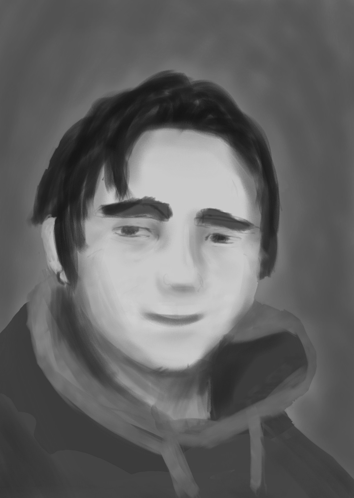

Alexander Severin
Junior Fontend Developer
Highly motivated junior specialist in web development burning with passion for design.
Skills
Work Experience
Pretty much a month of studies is a very valuable amount that for sure can find its use, niche in the modern world of web development, especially if I mention that I am ready to work for food, because there is nothing indecent in pure wish of one to satisfy one's own needs, especially in the case when such an activity may lead to the greatness. Also 3 years of being an electrician.
Certificates
English C1 (EF SET)
A reminder to redo.
Training & Courses
Self-education doesn't count? Some stuff on SoloLearn maybe?Education
College plus online studies (expand on that!)
Languages
Proficiencies. Some fancy system to visualize my English, Russian, maybe even Japanese (Chinese should not be here yet).
Interests
Like I love learning, art in almost any medium, languages. Share some plans? Nah, don't want to make God laugh.